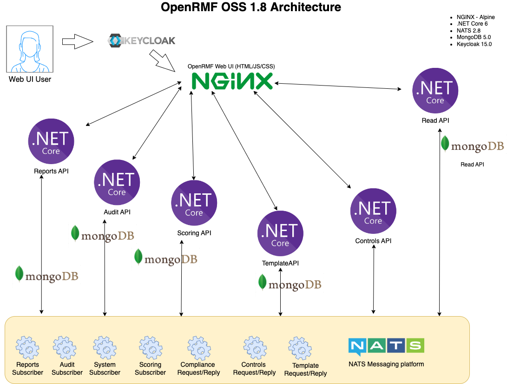

OpenRMF Introduction
Welcome to the OpenRMF Docs site. This site contains help screens, scenarios, screenshots and other useful information to use the OpenRMF tool fo you and your team.
OpenRMF is the only web-based open source tool to manage your DoD STIG checklists, generate NIST compliance, keep track of your security items that are Open or Not Reviewed, and massively shrink your timeline to collect data and submit for an ATO!
Compare this to the manual way you have to manage STIG Checklists and SCAP scans, outlined in Tutela’s blog post here.
See What’s New with the latest version.
What it does
OpenRMF manages your RMF documentation and removes the Cybersecurity mystery! It allows management to view the status of checklists and RMF progress on their systems.
It allows IT administrators and developers to store their checklists and scans in a single place.
It allows cybersecurity analysts to see the status of systems in a quick glance.
And it allows assessors to have a single place to view the system and all its checklists so their job is more organized.
It has great use cases for everyone! Most importantly: It greatly minimizes the manual nature of managing all this data for you!
Some of the high level features are below:
- 100% web based
- 100% Open Source Software (OSS)
- Upload a DISA Checklist CKL, DISA SCAP XCCDF format file or Nessus SCAP XCCDF format file easily to visualize your RMF process
- Upload a .Nessus ACAS scan file to see Patch summary of Critical and High items
- Automatically organizes your checklists by system
- Single source of truth for your system checklists
- Single source of truth for your latest Nessus patch scans
- Live online editing of your checklist through your web browser with auditing of the changes
- Bulk editing of Vulnerabilities across similar Checklist Types within a System
- One-click creation of your POA&M for your entire system (all servers, devices, SCAP scans, manual checklists)
- One-click creation of your Risk Assessment Report (RAR) for your entire system (all servers, devices, SCAP scans, manual checklists)
- One-click creation of your Test Plan Summary for your entire system (all servers, devices, SCAP scans, manual checklists)
- Interactive Reports and Searching of Nessus scan data
- Interactive Reports and Searching of System and checklist vulnerability data
- Easily find errors and deltas across checklists in your system
- Easily run a compliance report in seconds for your Low, Moderate, or High system
- Management insight into Cybersecurity Status and Security Posture instantly
- AuthN, AuthZ, and Role Based Access Control (RBAC) to control access to read as well as edit data
- Run on premise, on a local machine, or in the cloud (testing on Raspberry Pi 4 now)
- Containerized to run locally, in a container runtime, or in Kubernetes
Why use OpenRMF
The current way to implement the Risk Management Framework for your DoD Authority to Operate is VERY manual and VERY, VERY slow. VERY slow. It is driven by disparate pieces of a Java Viewer for checklists, massive amounts of MS Excel spreadsheets for viewing the checklists for management, MS Word documents, various PDF files, your own home grown applications to help automate pieces of this process, and more. Information is shared (hopefully!) via email and shared folders. And there is no one central place for developers, operations, management, and cybersecurity analysts to see the most up to date information that is needed to eventually submit to eMASS.
That changes with OpenRMF!
OpenRMF solves this dilemma. All you need is a web browser to view the pertinent information on your checklists within your system. Checklists are grouped by system and quickly show information such as the number of Category 1, 2, and 3 items as well as the number of Open items versus the Not a Finding “closed” items. Without having to open every single checklist file in the heavy Java viewer DISA provides.
OpenRMF helps in several ways:
- It is 100% browser based for all the major browsers (Chrome, Edge, Firefox, Safari, IE 11)
- You can import multiple checklists for a single source-of-truth for all checklists
- You can organize and manage your data by systems for a quicker, less stress filled way to see your system’s risk profile
- Reports for management highlight the most asked question on status and numbers of items by type
- You can run a single compliance report across all your checklists based on the Low/Moderate/High label as well as PII data included
- You can export any checklists to Excel or download a CKL file for viewing in the DISA Java Viewer
- You can drill down to your problem areas across all your checklists quickly with a few clicks and get actionable data quickly
With coming updates such as automating the Risk Assessment Report, automating the POA&M on fixes, as well as online editing of checklist status and comments OpenRMF is the app any DoD IT / Developer / Operations / Cybersecurity professional needs!
More information can be found in our product PDF on our website.
Architecture
Below is the top level architecture as of version 1.8 and beyond, drawn via Draw.io’s great tool (now Diagrams.net).
